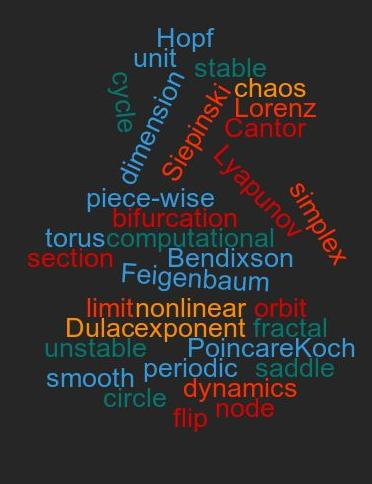

ABOUT
US
We
work on problems in nonlinear dynamics with applications in
various fields ranging from power grid management to relativity.
Our lab is part of the Department of
Physical Sciences at the IISER-Kolkata.
For
more information about ongoing projects please visit our
Research or People page.
For updates about talks, conferences and publications,
please visit the News page.
